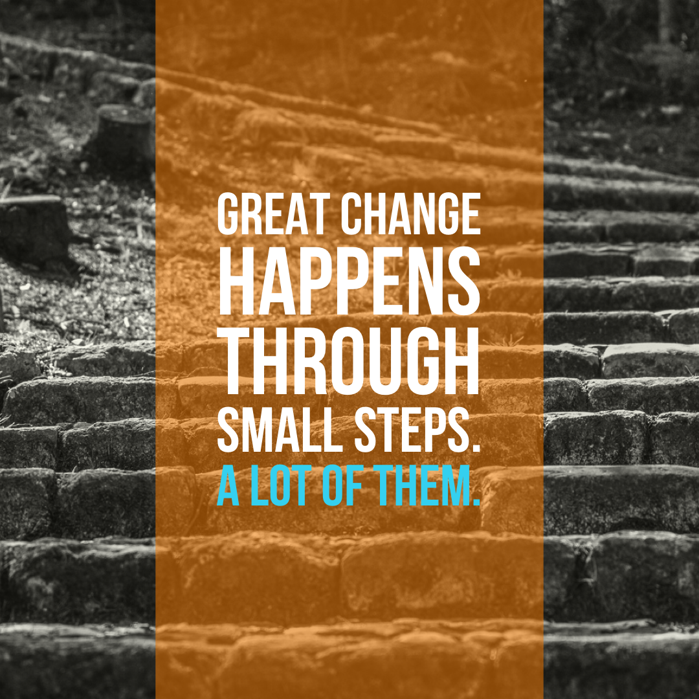

Great change happens through small steps. A lot of them.
Written by Chris Gallivan
07 Sep 2019
The DevOps community provides sage advice to focus on outcomes. Outcomes in this context serve as the “North Star” to guide our improvement journey.

For some of us focusing on outcomes can be daunting, especially when that outcome is so far away. If we are not careful, we can get lost in the minutia; stuck in the starters block. How do we get out of the starters block? I always tell my teams to make each day a little bit better than the day before. Make a small, simple improvement every day.
Remember every successful journey starts with a single step…and ends with tired legs.
This post originally appeared on Instagram. You can see other posts @the.devops.hive there